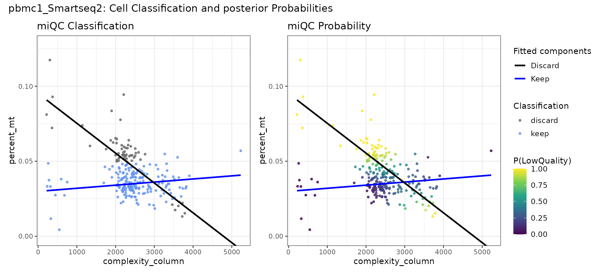
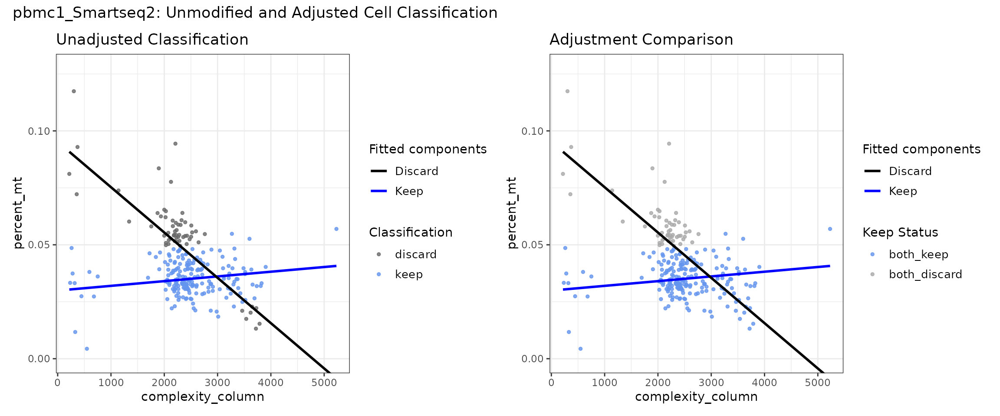
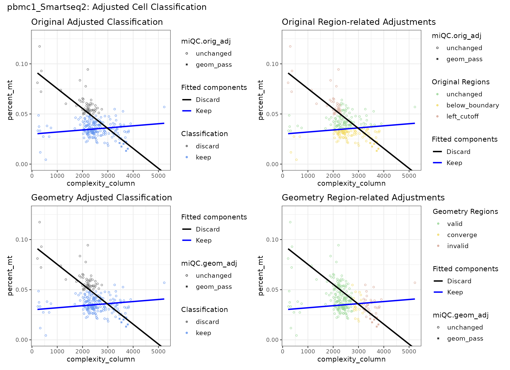
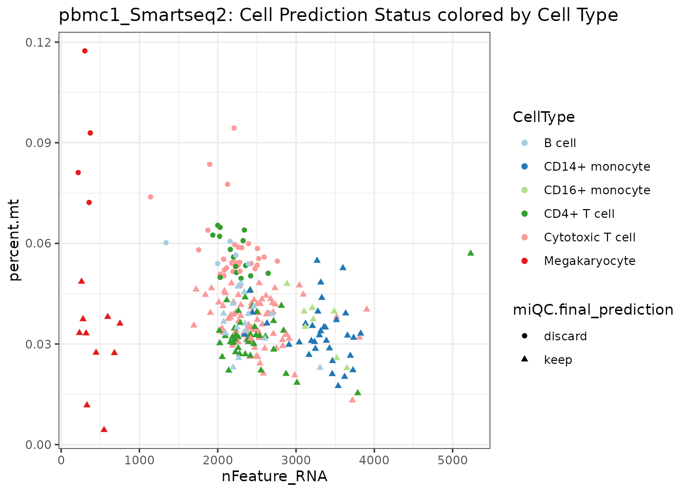
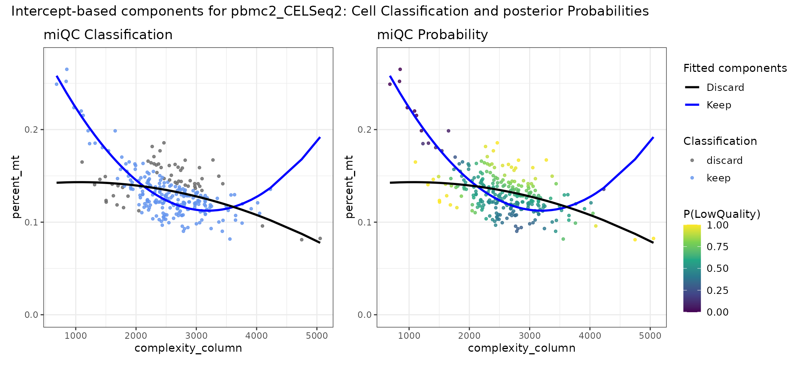
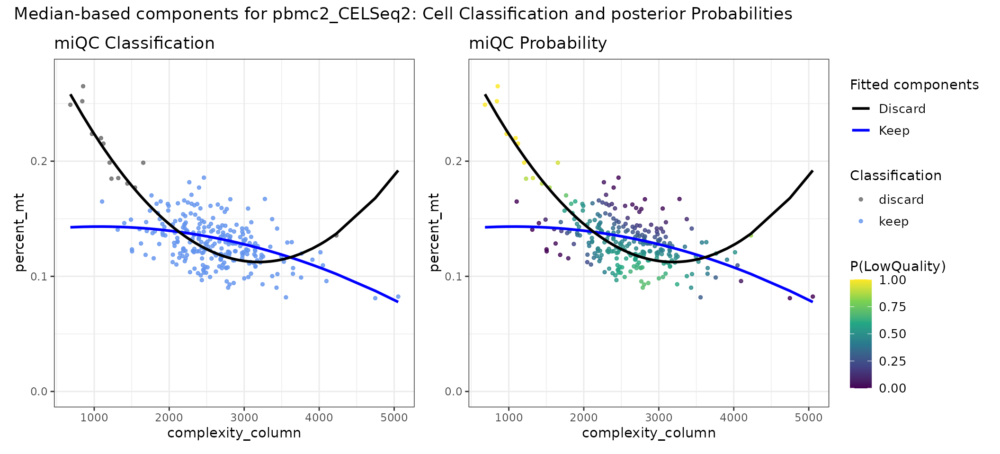
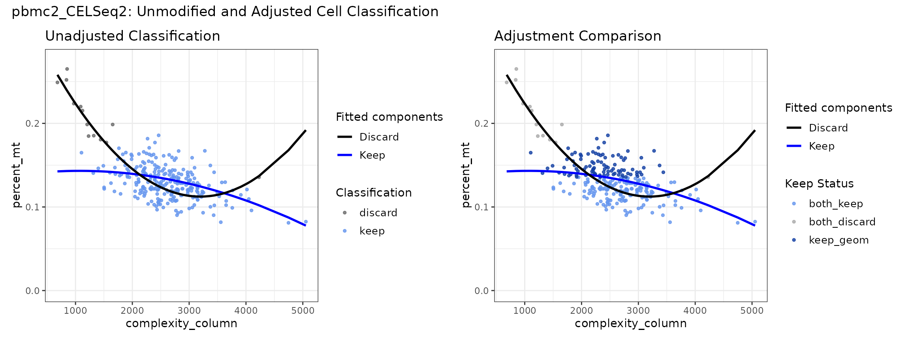
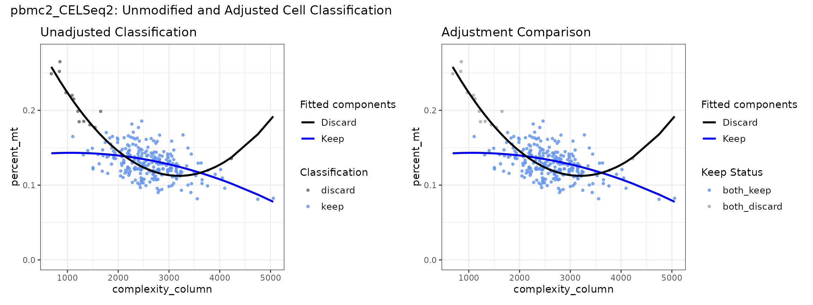
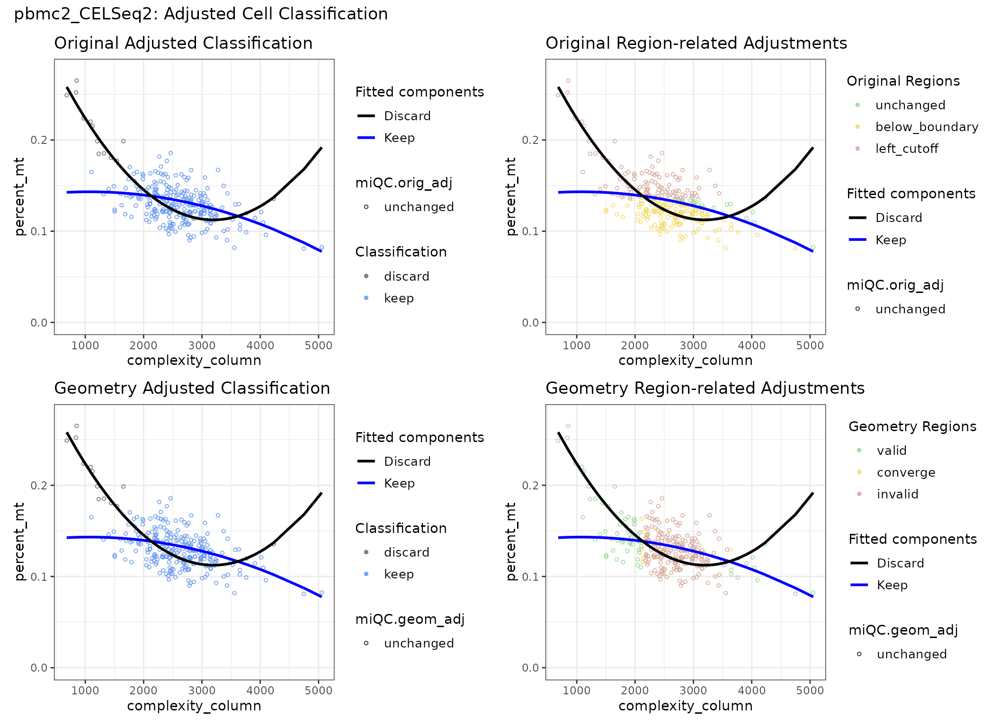
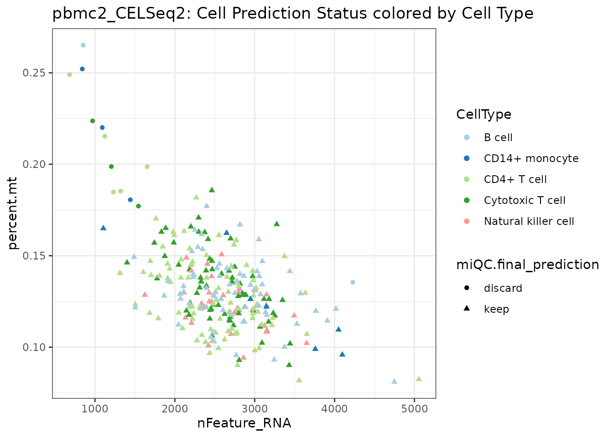

Introduction
Filtering cells using strict thresholds for features, counts, and mitochondrial percentages can remove specific cell types or cell states. Therefore, conditional filtering taking complexity information (counts and / or features) and mitochondrial percentages into consideration should be prioritized.
miQC provides a convenient approach overcoming the need for specifying specific cutoffs for complexity information and mitochondrial percentages by fitting a two-component mixture model using flexmix.
miQCadjprovides both an implementation of the original
miQC classification, and extends the workflow
- Featuring Seurat and SummarizedExperiment workflows,
- Supporting median-based identification of intact and compromised model components for spline, polynomial, and polynomial-raw models,
- Enabling comparisons of model classification, original and geometry-based adjustments by labeling of compromised cell fractions before transferring the selected results back to the input objects.
Running miQCadj using a subset of pbmcsca
This vignette demonstrates the functionality of the
miQCadj package using two small example datasets derived
from the pbmcsca dataset provided by the SeuratData
package.
The included datasets represent peripheral blood mononuclear cells (PBMCs) from two samples processed with different sequencing technologies:
- pbmc1_Smart-seq2
- pbmc2_CEL-Seq2
These subsets were selected to illustrate:
- geometry-based reassignment of misclassified cells
- differences between intercept- and median-based component selection
The original dataset is available via the SeuratData package.
Settings & Data
library(miQCadj)
suppressPackageStartupMessages({
library(Seurat)
library(SeuratObject)
library(SingleCellExperiment)
library(ggplot2)})
data("pbmc_sub2", package = "miQCadj")The pbmc_sub2 subset got 33694 genes and 526 cells with
253 cells for pbmc1 generated with Smartseq2 and 273 cells for pbmc2
generated with CELSeq2:
stats::addmargins(table(pbmc_sub2$sample_tech))
#>
#> pbmc1_Smartseq2 pbmc2_CELSeq2 Sum
#> 253 273 526The meta.data already comprises information regarding
the features ("nFeature_RNA"), UMI counts
("nCount_RNA"), and mitochondrial percentages
("percent.mt"). Additionally, we have cell type annotation
available ("CellType").
Cell filtering should be performed per sample. Therefore, we define each sample, while converting pbmc2 into a SummarizedExperiment-related object for demonstration purposes:
pbmc1 <- subset(pbmc_sub2, subset=sample_tech=="pbmc1_Smartseq2")
pbmc2 <- subset(pbmc_sub2, subset=sample_tech=="pbmc2_CELSeq2")
pbmc2 <- Seurat::as.SingleCellExperiment(pbmc2)Default Workflow for linear models
Fit model
First, we select pbmc1 generated with Smartseq2 and
apply `run_miQCadj()``:
fm1 <- run_miQCadj(pbmc1)By default, percent.mt will be selected for
mitochondrial percentage information and nFeature_RNA as
complexity column for Seurat objects. To use nCount_RNA as
complexity column, set complexity_column = "nCount_RNA. By
default, a linear model (model_type="linear") will be
applied and the component identity will be determined using the fitted
intercepts. Median-based component selection will additionally be
available for nonlinear models, where intercept-based ordering may not
adequately represent the fitted components across the observed
complexity range, as shown in the second part of the vignette.
Check components
check_miQC_components(flexmix_list = fm1, sample_name = "pbmc1_Smartseq2")
pbmc1_Smartseq2: miQC Classification and Posterior Probability of a Cell being low Quality
Define Classification
Next, we apply define a component selection mode and apply a
posterior cutoff. We will use the default with
component_selection="intercept" and
posterior_cutoff= 0.75:
fm1 <- define_classification(flexmix_list = fm1)This will add a column miQC.keep with
"keep" and "discard" labels. Cells with an
invalid-component posterior probability above the selected cutoff are
classified as "discard", cells at or below the cutoff are
classified as "keep".
Post-hoc adjustments
Post-hoc adjustments are essential for minimizing model-immanent classifications, not favored in filtering of Single Cell Datasets. Very simple scenarios occur in linear datasets, after the discard line crossed the keep line causing removal of high complexity, low mitochondrial reads.
Running adjust_classifications() will strongly reduce
such model-related filtering artifacts. We provide an
original_check and a geometry_check, which
will both be added to the flexmix data frame by default:
fm1 <- adjust_classification(flexmix_list = fm1)When uing adjust_classification(), the
original_check will always keep cells below the intact cell
distribution, while the argument enforce_left_cutoff can
either be TRUE, which will discard several cells with low
or intermediate library complexity and higher mitochondrial percentage,
or FALSE which will keep those cells.
The region-related geometry_check performs curve- and
distance-based plausibility adjustments, but hasn’t been benchmarked so
far, and therefore, it represents an experimental, heuristic adjustment
method. So it should be visualized and inspected using
check_miQC_predictions(), before being selected and
applied.
check_miQC_predictions(flexmix_list = fm1, sample_name = "pbmc1_Smartseq2",
add_unadjusted_prediction = TRUE,
add_compared_prediction = TRUE,
adjustment_method = NULL)
pbmc1_Smartseq2: Unmodified and Adjusted Cell Predictions
Though both adjustment methods use very distinct approaches for
reassigning cells, they provide identical predictions for this sample
given all shared cells are either labelled as both_keep or
both_discard.
Further diagnostics regarding the specific adjustments made by each adjustment method and the corresponding regions, can be visualized using:
check_miQC_predictions(flexmix_list = fm1, sample_name = "pbmc1_Smartseq2")
pbmc1_Smartseq2: Original and Adjusted Cell Classification
By default, the returned list of plots will be combined using
patchwork. To return a list with each plot being separate accessible,
set combine_plots=FALSE.
Add back to Seurat object
By default, only the final prediction column will be transferred to
input_obj. Given identical results for both adjustment
methods, the final prediction column would reveal identical results for
any adjustment method selected:
pbmc1 <- add_to_input_obj(flexmix_list = fm1, input_obj = pbmc1,
adjustment_method = "original_check")Within the returned Seurat object, we can check, whether specific cell types are discarded more often by creating a table showing the cell counts for each cell type:
meta <- as.data.frame(pbmc1@meta.data)
stats::addmargins(table(meta$CellType, meta[["miQC.final_prediction"]]))
#>
#> discard keep Sum
#> B cell 5 17 22
#> CD14+ monocyte 0 34 34
#> CD16+ monocyte 0 8 8
#> CD4+ T cell 15 43 58
#> Cytotoxic T cell 29 88 117
#> Megakaryocyte 4 10 14
#> Sum 53 200 253To obtain percentage information across kept and discarded cells within each cell type, we can create a proportional table:
round(prop.table(table(meta$CellType, meta[["miQC.final_prediction"]]),
margin = 1), digits = 3)
#>
#> discard keep
#> B cell 0.227 0.773
#> CD14+ monocyte 0.000 1.000
#> CD16+ monocyte 0.000 1.000
#> CD4+ T cell 0.259 0.741
#> Cytotoxic T cell 0.248 0.752
#> Megakaryocyte 0.286 0.714Also, we can create a plot showing the cell types and removed cells within the feature-percent-mt plot:
meta$CellType <- as.factor(meta$CellType)
meta[["miQC.final_prediction"]] <- as.factor(meta[["miQC.final_prediction"]])
ggplot2::ggplot(meta, ggplot2::aes(x = nFeature_RNA,
y = percent.mt,
colour = CellType,
shape = miQC.final_prediction)) +
ggplot2::geom_point() +
ggplot2::scale_color_brewer(palette = "Paired") +
ggplot2::labs(
title="pbmc1_Smartseq2: Cell Prediction Status colored by Cell Type") +
ggplot2::theme_bw()
pbmc1_Smartseq2: Cell Prediction status colored by Cell Type
The dataset contains 14 megakaryocytes (5.53%). The 5th percentile of
the number of detected genes (nFeature_RNA) corresponds to
722.6 genes. Applying this threshold would exclude 13 of the 14
megakaryocytes (92.9%), leaving only one cell of this population:
# Calculate the 5th percentile of detected genes
feature_cutoff <- unname(quantile(meta$nFeature_RNA, probs = 0.05))
sum(meta$CellType == "Megakaryocyte" & meta$nFeature_RNA > feature_cutoff)
#> [1] 1This example illustrates how global percentile-based filtering can disproportionately affect specific cell populations, even when only a small fraction of the overall dataset is excluded. Therefore, the consequences of QC filtering should be evaluated carefully to avoid unintentionally removing large fractions of biologically relevant cell populations.
Median-selection for non-linear models
The pbmc2 sample uses the Seurat-inherent column names
percent.mt and nFeature_RNA, instead of
standard naming conventions for SummarizedExperiment- derived objects,
which are subsets_mito_percent for mitochondrial percentage
information and detected for feature information.
Therefore, the column names need to be specified.
By default, the original miQC package uses the intercept for component definition, which can cause incorrect cell selection, if polynomial or spline models are selected:
fm2 <- run_miQCadj(input_obj = pbmc2, percent_mt = "percent.mt",
complexity_column = "nFeature_RNA",
model_type = "polynomial", add_median_selection = TRUE)
check_miQC_components(flexmix_list = fm2,
sample_name = "Intercept-based components for pbmc2_CELSeq2",
combine_plots=TRUE)
Intercept component selection for pbmc2_CELSeq2: miQC Classification and Posterior Probabilities of a Cell being low Quality
Using the intercept for component selection in this sample would make incorrect assignments, loosing high-quality cells, but keeping low-quality cells.
So, we can check the median component selection
(use_median_columns = TRUE) using:
check_miQC_components(flexmix_list = fm2,
sample_name = "Median-based components for pbmc2_CELSeq2",
use_median_columns = TRUE)
Median component selection for pbmc2_CELSeq2: miQC Classification and Posterior Probabilities of a Cell being low Quality
The assignments using medians as component selection mode match our
biological expectations with low complexity, but high mitochondrial
percentage cells belonging to the compromised component. Therefore, we
set component_selection = "median", while using the default
posterior threshold (posterior_cutoff=0.75):
fm2 <- define_classification(flexmix_list = fm2,
component_selection = "median")Afterwards, we adjusted the classification and check the predictions:
fm2 <- adjust_classification(flexmix_list = fm2)
# check predictions
check_miQC_predictions(flexmix_list = fm2, sample_name = "pbmc2_CELSeq2",
add_unadjusted_prediction = TRUE,
add_compared_prediction = TRUE,
adjustment_method = NULL)
Unmodified and Adjusted Cell Predictions for pbmc2_CELSeq2
Apparently, the original and geometry-based adjustment methods produced substantially different classifications for the CEL-Seq2 sample with many cells retained in the geometry_check being discarded by the original_check.
We can check the exact counts using:
addmargins(table(fm2$flexmix_data[["miQC.keep_adj_compared"]]))
#>
#> both_discard both_keep keep_geom Sum
#> 13 167 93 273The strict filtering in the original check is introduced by
enforce_left_cutoff=TRUE. Since removing 93 cells,
corresponding to a cell fraction of 34.1%, shouldn’t be performed
without further checks, we will set
enforce_left_cutoff=FALSE. This will keep the
left_cutoff information available, without forcing
extensive filtering decisions without further quality checks being
performed:
# adjust classification
fm2 <- adjust_classification(flexmix_list = fm2, enforce_left_cutoff = FALSE)
# check predictions
check_miQC_predictions(flexmix_list = fm2, sample_name = "pbmc2_CELSeq2",
add_unadjusted_prediction = TRUE,
add_compared_prediction = TRUE,
adjustment_method = NULL)
Unmodified and Adjusted Cell Predictions for pbmc2_CELSeq2 (without left cutoff)
Now, both adjustment methods provide identical results, with no
adjustments made, given all shared cells are either labelled as
both_keep or both_discard.
To check the regions assigned in both adjustment methods we can create the prediction plot for both adjustment methods:
check_miQC_predictions(fm2, sample_name = "pbmc2_CELSeq2")
Median-based Component Selection and Region-Adjustments for pbmc2_CELSeq2 (without left cutoff)
Add back to SingleCellExperiment object
After setting enforce_left_cutoff=FALSE, both adjustment
methods provided identical prediction results. To retain all columns
from the flexmix data frame enabling further checks, we can set
transfer_columns = "all", enabling further checks,
i.e. whether specific cell types occupy specific region
compartments:
pbmc2 <- add_to_input_obj(flexmix_list = fm2, input_obj = pbmc2,
transfer_columns = "all",
adjustment_method = "geometry_check")Within the returned SingleCellExperiment object, we can check, whether specific cell types arediscarded more often by creating a table showing the cell counts for each cell type:
col_data <- as.data.frame(SummarizedExperiment::colData(pbmc2))
stats::addmargins(table(col_data$CellType, col_data[["miQC.final_prediction"]]))
#>
#> discard keep Sum
#> B cell 2 64 66
#> CD14+ monocyte 3 8 11
#> CD4+ T cell 5 88 93
#> Cytotoxic T cell 3 68 71
#> Natural killer cell 0 32 32
#> Sum 13 260 273To obtain percentage information across kept and discarded cells within each cell type, we can create a proportional table:
round(prop.table(table(col_data$CellType, col_data[["miQC.final_prediction"]]),
margin = 1), digits = 3)
#>
#> discard keep
#> B cell 0.030 0.970
#> CD14+ monocyte 0.273 0.727
#> CD4+ T cell 0.054 0.946
#> Cytotoxic T cell 0.042 0.958
#> Natural killer cell 0.000 1.000Or by creating a plot showing the cell types and removed cells within the feature-percent-mt plot:
col_data$CellType <- as.factor(col_data$CellType)
col_data[["miQC.final_prediction"]] <- as.factor(col_data[["miQC.final_prediction"]])
ggplot2::ggplot(col_data, ggplot2::aes(x = nFeature_RNA,
y = percent.mt,
colour = CellType,
shape = miQC.final_prediction)) +
ggplot2::geom_point() + ggplot2::scale_color_brewer(palette = "Paired") +
ggplot2::labs(
title="pbmc2_CELSeq2: Cell Prediction Status colored by Cell Type") +
ggplot2::theme_bw()
pbmc2_CELSeq2: Cell Prediction status colored by Cell Type
Session Info
session_info <- utils::sessionInfo()
session_info$loadedOnly <- NULL
print(session_info)
#> R version 4.6.1 (2026-06-24)
#> Platform: x86_64-pc-linux-gnu
#> Running under: Ubuntu 24.04.5 LTS
#>
#> Matrix products: default
#> BLAS: /usr/lib/x86_64-linux-gnu/openblas-pthread/libblas.so.3
#> LAPACK: /usr/lib/x86_64-linux-gnu/openblas-pthread/libopenblasp-r0.3.26.so; LAPACK version 3.12.0
#>
#> locale:
#> [1] LC_CTYPE=C.UTF-8 LC_NUMERIC=C LC_TIME=C.UTF-8
#> [4] LC_COLLATE=C.UTF-8 LC_MONETARY=C.UTF-8 LC_MESSAGES=C.UTF-8
#> [7] LC_PAPER=C.UTF-8 LC_NAME=C LC_ADDRESS=C
#> [10] LC_TELEPHONE=C LC_MEASUREMENT=C.UTF-8 LC_IDENTIFICATION=C
#>
#> time zone: UTC
#> tzcode source: system (glibc)
#>
#> attached base packages:
#> [1] stats4 stats graphics grDevices utils datasets methods
#> [8] base
#>
#> other attached packages:
#> [1] ggplot2_4.0.3 SingleCellExperiment_1.34.0
#> [3] SummarizedExperiment_1.42.0 Biobase_2.72.0
#> [5] GenomicRanges_1.64.0 Seqinfo_1.2.0
#> [7] IRanges_2.46.0 S4Vectors_0.50.3
#> [9] BiocGenerics_0.58.1 generics_0.1.4
#> [11] MatrixGenerics_1.24.0 matrixStats_1.5.0
#> [13] Seurat_5.6.0 SeuratObject_5.4.0
#> [15] sp_2.2-4 miQCadj_0.1.0